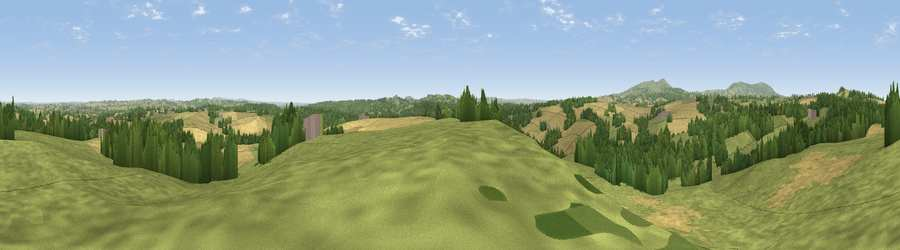

Viewpoint near Neen Savage
#14579 in England · top 32% of its area beats it · near Neen SavageThe view, rendered

A 360° render of this exact spot computed from the terrain model, tree cover and land cover — summer colours, afternoon light, calibrated against photographs of famous viewpoints. Real trees, hedges and buildings will differ in detail.
The panorama
Grey silhouette: terrain skyline in each direction (720 bearings, Earth curvature and refraction included). Dashed green: skyline with trees (+15 m) and buildings (+8 m) as obstacles. Blue strip: how far the ground is visible on each bearing.
Where the view opens
Wedge length = distance to the farthest visible ground on that bearing (vegetation-aware). Rings at 10, 25 and 50 km.
What fills the view
51% grassland · 29% cropland · 20% woodland ·
Angular shares of the visible panorama (visual magnitude), not map area. Landscape diversity 0.46 (0–1 Shannon).
Key numbers
More beautiful places nearby
The staircase of upgrades: each row has a higher view potential than everything closer. Driving times are estimates from straight-line distance, calibrated against real road routing — check an actual route before setting out.
| Place | Direction | Drive | Score |
|---|---|---|---|
| Viewpoint near Chorley | NNW · 2 km | ~6 min | 64.9 |
| Knowle Hill | NNW · 3 km | ~7 min | 75.5 |
| Magpie Hill | W · 9 km | ~18 min | 75.7 |
| Viewpoint near Cleeton | W · 11 km | ~20 min | 78.1 |
| Titterstone Clee | W · 11 km | ~21 min | 83.8 |
| The Lawley | NW · 28 km | ~45 min | 85.8 |
| Viewpoint near Little Wenlock | NNW · 30 km | ~47 min | 86.6 |
| North Hill | SSE · 33 km | ~51 min | 86.8 |
52.40708, -2.43397 · source: screening · position refined by local search. Computed location — check access rights before visiting.